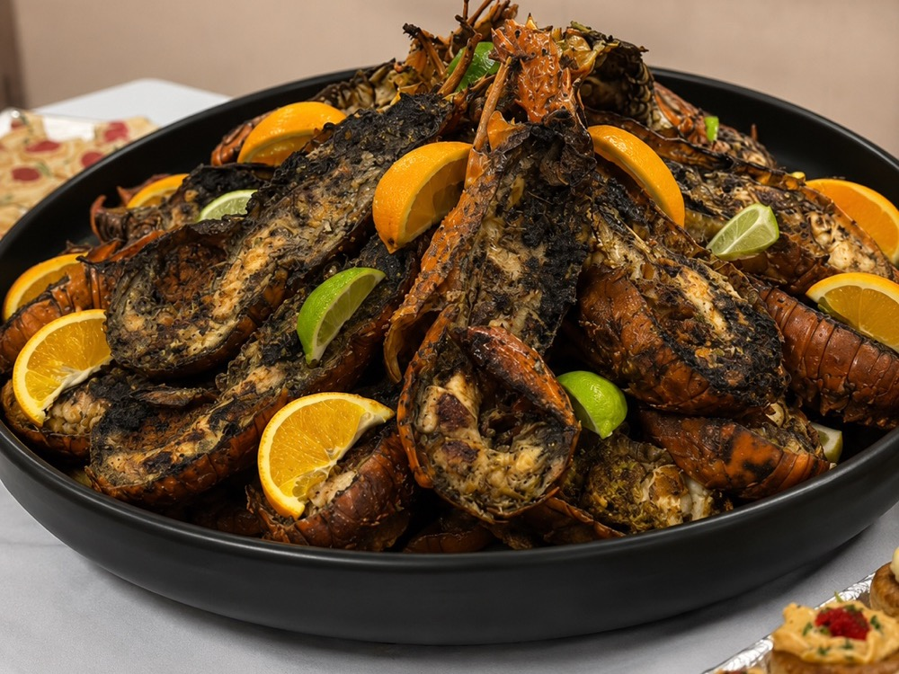
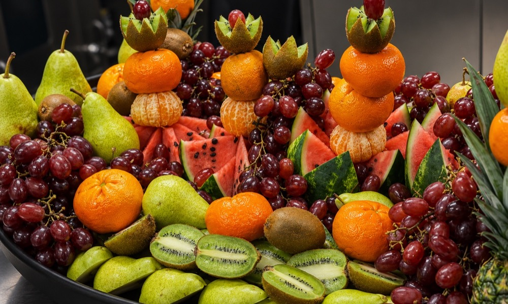
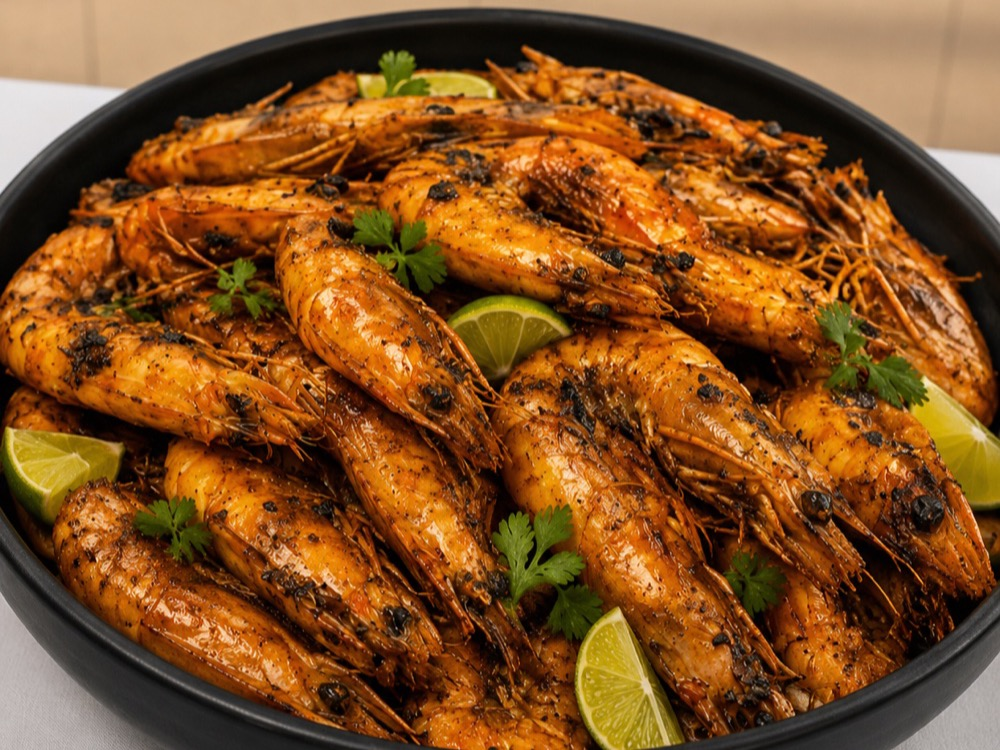
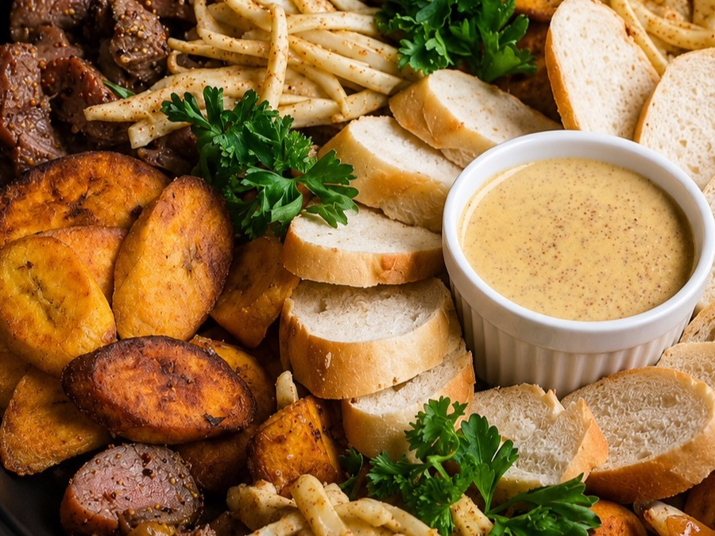
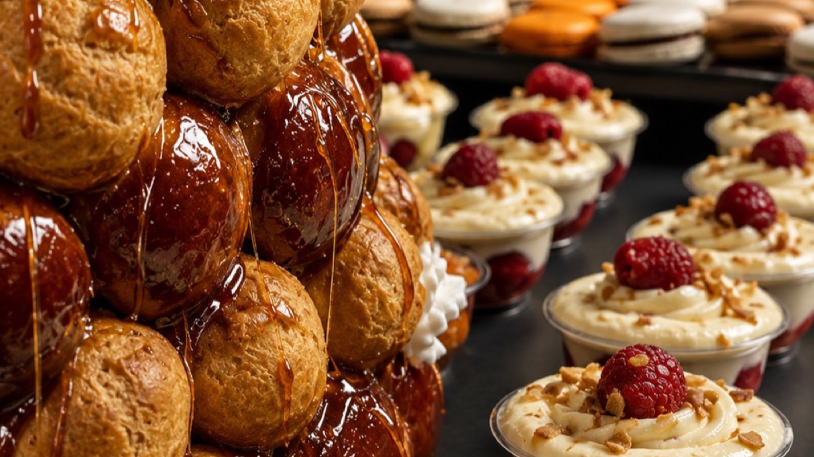

La cuisine sénégalaise dans ce qu'elle a de plus généreux — tradition vivante, épices justes et l'hospitalité de la teranga.
Tout commence là-bas. Dans une cour de Dakar où la fumée des braises se mêle aux épices, où les marmites sont larges comme des promesses et où chaque repas rassemble la famille autour d'un bol commun. C'est cette image que Le Wax porte jusqu'à Besançon.
Pas une imitation. Une transmission.
Le savoir-faire du Wax ne s'invente pas. Il se transmet de main en main, de génération en génération — les gestes précis pour doser le thiof séché, la patience pour laisser infuser le bouillon, l'œil qui reconnaît quand le riz a absorbé toute la saveur du fond de marmite.
En wolof, tiéb veut dire riz, djen veut dire poisson. Simple. Mais derrière cette simplicité se cache une alchimie redoutable : le riz qui absorbe le fond de cuisson du poisson, les légumes qui se fondent dans le bouillon, le tout qui caramélise doucement en une croûte dorée — le xoon.
Au Wax, le thiéboudienne mijote plusieurs heures. Le poisson — thiof ou dorade — est farci de persil, d'ail et d'épices avant d'être saisi puis déposé sur le riz gonflé de saveur. Le résultat est un plat total : parfumé, généreux, inoubliable.
Le yassa est né en Casamance, au sud du Sénégal, dans la région des mangroves et des jardins fruitiers. Son secret : une marinade au citron vert qui attendrit la chair du poulet pendant des heures avant de le griller à la braise.
Puis vient la magie des oignons. Des kilos d'oignons fondus à feu doux jusqu'à la confiture — sucrés, acidulés, irrésistibles. Le poulet y retourne mijoter. Ce plat réconcilie les contraires : la brûlure du citron, la douceur des oignons, le mordant de la moutarde.
À Dakar, le dibi se mange debout, la nuit, au coin d'une rue. Le dibiterie — le boucher-grilladin — taille la viande d'agneau à la volée, la jette sur des braises vives et la retourne d'un geste expert. Pas de fioritures. La fumée, la chair, le sel.
Au Wax, ce rituel urbain de Dakar est honoré dans les règles : viande grillée à point, oignons fondus, moutarde relevée et un soupçon de poivre noir qui monte. Une adresse directe aux sens, sans détour.
La pâte d'arachide. Dorée, dense, enveloppante. Elle fond dans le bouillon avec des morceaux de viande tendre et des épices douces. Le mafé est un plat de patience et de profondeur — on le laisse mijoter jusqu'à ce que la sauce devienne soyeuse, presque sucrée.
Un repas sénégalais ne se termine pas — il se prolonge. D'abord le thiakry : ce dessert de couscous de mil, yaourt crémeux, raisins secs et noix de coco râpée qui rappelle les goûters d'enfance à Dakar.
Puis les accras dorés, croustillants dehors et fondants dedans. Les pastels farcis au thon épicé. Et pour couronner le tout : le bissap, cette infusion écarlate d'hibiscus glacée, légèrement sucrée, acidulée — la boisson des rois et des familles.




